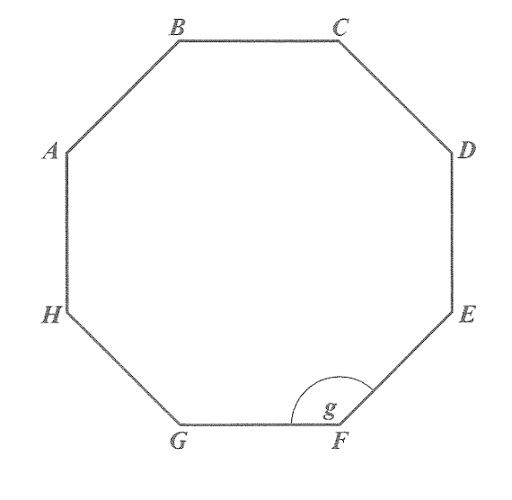
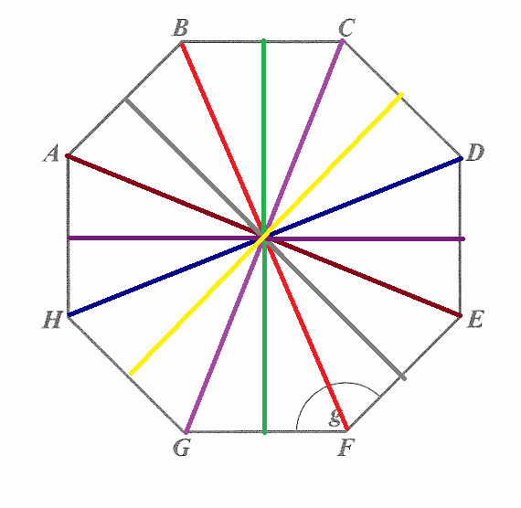
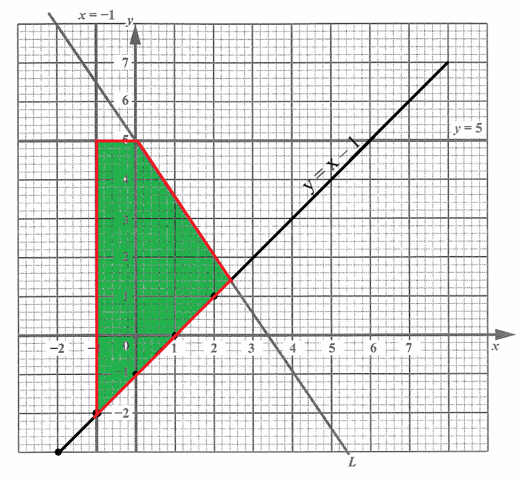
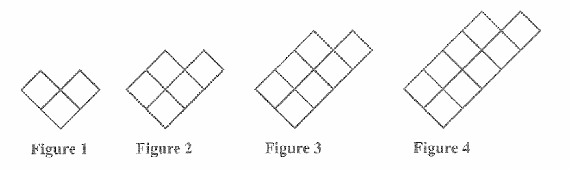

CSEC Examination: Mathematics: Paper 02: General Proficiency
The Joy of the Teacher is the Success of the Students. – Samuel Chukwuemeka
Welcome to Our Site
I greet you this day,
These are the solutions to the CSEC Mathematics Paper 02 questions.
Formulas, rules/laws, and theorems are not stated here. However, they are stated on the website for each topic
as applicable. Please review them there.
The link to the video solutions will be provided for you. Please subscribe to the YouTube channel to be notified
of upcoming livestreams.
You are welcome to ask questions during the video livestreams.
If you find these resources valuable and if any of these resources were helpful in your passing the
Mathematics tests/exams, please consider making a donation:
Cash App: $ExamsSuccess or
cash.app/ExamsSuccess
PayPal: @ExamsSuccess or
PayPal.me/ExamsSuccess
Venmo: @ExamsSuccess or
Venmo.com/u/ExamsSuccess
Your donation is appreciated.
Comments, ideas, areas of improvement, questions, and constructive
criticisms are welcome.
Feel free to contact me. Please be positive in your message.
I wish you the best.
Thank you.
CARIBBEAN SECONDARY EDUCATION CERTIFICATE EXAMINATION
MATHEMATICS
Time: 2 hours 40 minutes
READ THE FOLLOWING INSTRUCTIONS CAREFULLY.
(1.) This paper consists of TWO sections: I and II.
(2.) Section I has SEVEN questions and Section II has THREE questions.
(3.) All responses MUST be written in the answer booklet provided.
(4.) Your responses MUST be written in English.
(5.) Numerical answers that are non-exact should be given correct to 3 significant figues or 1 decimal place for
angles in degrees, unless a different level of accuracy is specified in the question.
(6.) All working MUST be clearly shown.
(7.) It is an offense to share your keycode with any other candidate or to log in with another candidate's
details.
(8.) Any attempt to change the configuration of this machine, connect external devices, connect to external
networks or to in any way initiate communication with resources other than the URL provided will result in your
disqualification, you being shut out of the system and the cancellation of your entire test.
Formula Sheet: List of Formulae



(i.) Complete the statement below in relation to the diagram shown above.
The regular octagon has .......... lines of symmetry and rotational symmetry of order .......... .
(ii.) Calculate the value of Angle g.
(b.) The diagram below shows two similar, right-angled triangles drawn from a common vertex, V.
The lines ZY and WX are parallel.
Also, the lines VY = 5 cm, ZY = 7 cm and WX = 28 cm.

(i.) Calculate the length of YX.
(ii.) Determine the magnitude of Angle VWX.
(a.) (i.)
A line of symmetry (also called reflectional or mirror symmetry) is an imaginary line that divides a shape into two identical halves.
For any regular polygon, the number of lines of symmetry is always equal to the number of sides, n
For a regular octagon, $n = 8$, therefore, there are 8 lines of symmetry.
They are:
4 lines of symmetry that run directly through opposite vertices (corners) and
4 lines of symmetry that run directly through the midpoints of opposite sides

The order of rotational symmetry is the number of times a shape looks exactly the same as its original position during a full 360° rotation around its center point.
For any regular polygon, the order of rotational symmetry is always equal to the number of sides n
For a regular octagon, $n = 8$, therefore, the rotational symmetry is of order, 8.
The regular octagon has 8 lines of symmetry and rotational symmetry of order 8.
(ii.)
For a regular polygon of sides, n, the measure of an interior angle = $\dfrac{180(n - 2)}{n}$
$ \underline{\text{Regular Octagon }}: n = 8 \\[3ex] \angle g = \dfrac{180(8 - 2)}{8} \\[5ex] = \dfrac{45(6)}{2} \\[5ex] = 135^\circ $ (b.) The diagram below shows two similar, right-angled triangles drawn from a common vertex, V.
Let us show the two similar right-angled triangles.

$ (i.) \\[3ex] \text{Let } |YX| = p \\[3ex] \triangle ZVY \sim \triangle WVX \\[3ex] \dfrac{5 + p}{28} = \dfrac{5}{7} \\[5ex] 5 + p = \dfrac{28(5)}{7} \\[5ex] 5 + p = 20 \\[3ex] p = 20 - 5 \\[3ex] p = 15 \\[3ex] |YX| = 15\;cm \\[5ex] (ii.) \\[3ex] \angle VWX = \angle VZY = \theta \quad\dots\text{Corresponding angles are congruent} \\[3ex] \underline{\triangle VZY} \\[3ex] \tan\theta = \dfrac{opp}{adj} \quad\dots\text{SOHCAHTOA} \\[5ex] \tan\theta = \dfrac{5}{7} \\[5ex] \theta = \tan^{-1}\left(\dfrac{5}{7}\right) \\[5ex] \theta = 35.53767779 \\[3ex] \theta \approx 35.5^\circ \quad\dots\text{to 1 decimal place} $
(a.) Show that the value of c is 10.
(b.) Determine the gradient of L.
(c.) The line with equation $3x + 4y = 8$ intersects the line L at the point T. Determine the coordinates of the point T.
(d.) The diagram below shows the graph of L and two other lines, $x = -1$ and $y = 5$.

On the graph above, draw the line $y = x - 1$ and shade the region that satisfies the inequalities listed below.
$ x \ge -1 \\[3ex] y \le 5 \\[3ex] y \ge x - 1 \\[3ex] 3x + 2y \le 10 \\[3ex] $
$ (a.) \\[3ex] 3x + 2y = c \\[3ex] \text{Passes through } (-2, 8) \implies \\[3ex] x = -2 \\[3ex] y = 8 \\[3ex] \implies \\[3ex] 3(-2) + 2(8) = c \\[3ex] -6 + 16 = c \\[3ex] c = 10 \\[3ex] \text{Line L: } 3x + 2y = 10 \\[5ex] (b.) \\[3ex] 3x + 2y = 10 \\[3ex] 2y = -3x + 10 \\[3ex] y = -\dfrac{3}{2}x + \dfrac{10}{2} \\[5ex] y = -\dfrac{3}{2}x + 5 \quad\dots\text{Slope-Intercept Form} \\[5ex] \text{Gradient = Slope} = -\dfrac{3}{2} \\[5ex] (c.) \\[3ex] 3x + 4y = 8 \text{ intersects } 3x + 2y = 10 \\[3ex] 3x + 4y - 8 = 0 \text{ intersects } 3x + 2y - 10 = 0 \\[3ex] 0 = 0 \implies \\[3ex] 3x + 4y - 8 = 3x + 2y - 10 \\[3ex] 3x - 3x + 4y - 2y = -10 + 8 \\[3ex] 2y = -2 \\[3ex] y = -\dfrac{2}{2} \\[5ex] y = -1 \\[3ex] \text{Substitute for } y \text{ using any of the lines say line } L \\[3ex] 3x + 2(-1) = 10 \\[3ex] 3x - 2 = 10 \\[3ex] 3x = 10 + 2 \\[3ex] 3x = 12 \\[3ex] x = \dfrac{12}{3} \\[5ex] x = 4 \\[5ex] \text{Point T} = (x, y) \\[3ex] = (4, -1) \\[3ex] $
| x | y |
|---|---|
| −2 | −3 |
| −1 | −2 |
| 0 | −1 |
| 1 | 0 |
| 2 | 1 |
The shaded region that satisfies the inequalities is shown:

On the map, 1 cm represents n km.
Determine the:
(i.) value of n
(ii.) distance on the map, in cm, which corresponds to an actual distance of 4.8 km.
(iii.) actual area, in square kilometres, of a lake which has an area of 12 cm² on the map.
(b.) The diagram below shows a running belt, EFGHIJE, that revolves around a running board on a treadmill.
In the diagram, EJI and HGF are semicircles with a diameter of 0.7 m and EFHI is a rectangle.

$ \left[\text{Use } \pi = \dfrac{22}{7}\right] \\[5ex] $ (i.) Calculate the length of the belt.
(ii.) Glenda uses the equipment to exercise 4 times a week and runs at 9 km/h for 20 minutes each time.
Calculate the number of complete revolutions the running belt makes in one week during Glenda's exercise routine.
[Assume that the running belt moves at the same speed as Glenda.]
$ (a.) \\[3ex] \underline{\text{Map Scale as Ratio}} \\[3ex] 1 : 20000 \\[3ex] 1\;cm = 20000\;cm \\[5ex] \underline{\text{Map Scale Representation}} \\[3ex] 1\;cm = n\;km \\[3ex] \implies \\[3ex] 20000\;cm = n\;km \\[5ex] (i.) \\[3ex] \underline{\text{Unity Fraction Method}} \\[3ex] \text{Set up units: } 20000\;cm * \dfrac{...\;m}{...\;cm} * \dfrac{...\;km}{...\;m} \\[5ex] \text{Set up measurements and units: } 20000\;cm * \dfrac{10^{-2}\;m}{1\;cm} * \dfrac{1\;km}{10^3\;m} \\[5ex] = 20000\;cm * \dfrac{0.01\;m}{1\;cm} * \dfrac{1\;km}{1000\;m} \\[5ex] = 0.2\;km \\[3ex] \implies \\[3ex] 20000\;cm = n\;km = 0.2\;km \\[3ex] n = 0.2 \\[5ex] (ii.) \\[3ex] 1\;cm \text{ on the map} = 0.2\;km \\[3ex] \text{Set up units: } 4.8\;km * \dfrac{...\;cm}{...\;km} \\[5ex] \text{Set up measurements and units: } 4.8\;km * \dfrac{1\;cm}{0.2\;km} \\[5ex] = 24\;cm \\[5ex] (iii.) \\[3ex] 1\;cm \text{ on the map} = 0.2\;km \\[3ex] \text{Set up units: } 12\;cm * cm * \dfrac{...\;km}{...\;cm} * \dfrac{...\;km}{...\;cm} \\[5ex] \text{Set up measurements and units: } 12\;cm * cm * \dfrac{0.2\;km}{1\;cm} * \dfrac{0.2\;km}{1\;cm} \\[5ex] = 0.48\;km^2 \\[3ex] $ Running belt, EFGHIJE = 2 semicircles: semicircles EJI and HGF with a diameter of 0.7 m and rectangle EFHI
$ (b.) \\[3ex] 2\text{ semicircles} = 1\text{ circle} \\[3ex] C = \text{circumference} \\[3ex] d = \text{diameter} = 0.7\;m \\[5ex] C = \pi d \\[3ex] C = \dfrac{22}{7} * 0.7 \\[5ex] C = 2.2\;m \\[5ex] \text{Rectangle } EFHI \\[3ex] L = \text{length} = |EF| = |IH| = 2.1\;m \\[5ex] (i.) \\[3ex] \underline{\text{Running Belt }} EFGHIJE \\[3ex] \text{Length of Belt} = C + 2L \quad\dots\text{Diagram} \\[3ex] = 2.2 + 2(2.1) \\[3ex] = 6.4\;m \\[5ex] (ii.) \\[3ex] 1\text{ revolution} = \text{Length of Belt} = 6.4\;m \\[3ex] \text{Set up units: } \dfrac{9\;km}{...\;hr} * \dfrac{...\;hr}{...\;min} * 20\;min * \dfrac{...\;m}{...\;km} * \dfrac{...\;rev}{...\;m} \\[5ex] \text{Set up measurements and units: } \dfrac{9\;km}{1\;hr} * \dfrac{1\;hr}{60\;min} * 20\;min * \dfrac{10^3\;m}{1\;km} * \dfrac{1\;rev}{6.4\;m} \\[5ex] = 468.75\;rev \\[3ex] 1\text{ time a week} = 468.75\text{ revolutions} \\[3ex] 4\text{ times a week} = 4(468.75) = 1875\text{ revoluions}. $

(a.) Complete the diagram below to show Figure 5.

(b.) The number of squares, Q, the number of sticks, S, and the perimeter of each figure, P, follow a pattern.
The values for Q, S and P for the first 4 figures are shown in the table below.
Study the pattern of numbers in each row of the table and answer the questions that follow.
| Figure Number (D) | Number of Squares (Q) | Number of Sticks (S) | Perimeter (P) |
|---|---|---|---|
| 1 | 3 | 10 | 8 |
| 2 | 5 | 15 | 10 |
| 3 | 7 | 20 | 12 |
| 4 | 9 | 25 | 14 |
| 5 | $\rule{5em}{0.4pt}$ | $\rule{5em}{0.5pt}$ | 16 |
| $\vdots$ | $\vdots$ | $\vdots$ | $\vdots$ |
| $\rule{5em}{0.5pt}$ | 47 | 120 | $\rule{5em}{0.5pt}$ |
| $\vdots$ | $\vdots$ | $\vdots$ | $\vdots$ |
| n | $\rule{5em}{0.5pt}$ | $\rule{5em}{0.5pt}$ | $\rule{5em}{0.5pt}$ |
(c.) Mala says that she can make one of the figures with EXACTLY 502 squares.
Explain why she is incorrect.
(a.)
A study of the fugures show that:
Figure 1: 1 square on top, 2 squares on bottom
Figure 2: 2 squares on top, 3 squares on bottom
Figure 3: 3 squares on top, 4 squares on bottom
Figure 4: 4 squares on top, 5 squares on bottom
So, Figure 5 will be:
Figure 2: 5 squares on top, 6 squares on bottom

$ (b.) \\[3ex] D, Q, S, P \text{ are arithmetic sequences.} \\[3ex] \underline{\text{Arithmetic Sequence}} \\[3ex] \text{first term} = a \\[3ex] \text{common difference} = d \\[3ex] \text{number of terms} = n \\[3ex] \text{nth term} = AS_n \\[3ex] AS_n = a + d(n - 1) \\[5ex] \underline{\text{Figure Number, }D} \\[3ex] 1, 2, 3, 4, 5, ... \\[3ex] a = 1 \\[3ex] d = 2 - 1 = 1 \\[3ex] AS_n = 1 + 1(n - 1) \\[3ex] = 1 + n - 1 \\[3ex] = n \\[3ex] \implies \\[3ex] D = n \\[5ex] \underline{\text{Number of Squares, }Q} \\[3ex] 3, 5, 7, 9, ... \\[3ex] a = 3 \\[3ex] d = 9 - 7 = 2 \\[3ex] AS_n = 3 + 2(n - 1) \\[3ex] = 3 + 2n - 2 \\[3ex] = 2n + 1 \\[3ex] \implies \\[3ex] Q = 2n + 1 \\[5ex] \underline{\text{Number of Sticks, }S} \\[3ex] 10, 15, 20, 25, ... \\[3ex] a = 10 \\[3ex] d = 20 - 15 = 5 \\[3ex] AS_n = 10 + 5(n - 1) \\[3ex] = 10 + 5n - 5 \\[3ex] = 5n + 5 \\[3ex] \implies \\[3ex] S = 5n + 5 \\[5ex] \underline{\text{Perimeter, }P} \\[3ex] 8, 10, 12, 14, 16 ... \\[3ex] a = 8 \\[3ex] d = 16 - 14 = 2 \\[3ex] AS_n = 8 + 2(n - 1) \\[3ex] = 8 + 2n - 2 \\[3ex] = 2n + 6 \\[3ex] \implies \\[3ex] P = 2n + 6 \\[5ex] (i.) \\[3ex] D = n = 5 \\[5ex] Q = 2(5) + 1 \\[3ex] Q = 11 \\[5ex] S = 5(5) + 5 \\[3ex] S = 30 \\[5ex] (ii.) \\[3ex] Q = 2n + 1 = 47 \\[3ex] 2n = 47 - 1 \\[3ex] 2n = 46 \\[3ex] n = \dfrac{46}{2} \\[5ex] n = 23 \\[5ex] D = n = 23 \\[5ex] P = 2(23) + 6 \\[3ex] P = 52 \\[5ex] (iii.) \\[3ex] D = n \\[3ex] Q = 2n + 1 \\[3ex] S = 5n + 5 \\[3ex] P = 2n + 6 \\[5ex] (c.) \\[3ex] Q = 502? \\[3ex] 2n + 1 = 502 \\[3ex] 2n = 502 - 1 \\[3ex] 2n = 501 \\[3ex] n = \dfrac{501}{2} = 250.5 \\[5ex] $ The number of squares must be a positive integer.
250.5 is not an integer.
Hence, Mala is incorrect.
$ f : x \rightarrow x^2 + 3, \;\; x \ge 0 \\[3ex] g : x \rightarrow 2x + 2, \;\; x \in R \\[3ex] $ (i.) Calculate the value of $g(-1)$
(ii.) Write down an expression for $f^{-1}(x)$
(b.) (i.) Derive a simplified expression for $gf(x)$
(ii.) Given that $fg(x) = 4x^2 + 8x + 7$, solve the following equation.
$ fg(x) = 2gf(x) + 15 \\[3ex] $ (c.) On the grid provided in the answer booklet, plot the graph of the functions f and g, for $x \ge 0$
$ (a.) \\[3ex] f(x) = x^2 + 3 \hspace{3em} x \ge 0 \\[3ex] g(x) = 2x + 2 \\[5ex] (i.) \\[3ex] g(-1) = 2(-1) + 2 \\[3ex] g(-1) = 0 \\[5ex] (ii.) \\[3ex] y = x^2 + 3 \\[3ex] \text{Interchange } x \text{ and } y \\[3ex] x = y^2 + 3 \\[3ex] \text{Solve for } y \\[3ex] x - 3 = y^2 \\[3ex] y = \sqrt{x - 3} \\[3ex] \therefore f^{-1}(x) = \sqrt{x - 3} \\[5ex] (b.)(i.) \\[3ex] gf(x) \\[3ex] = g(x^2 + 3) \\[3ex] = 2(x^2 + 3) + 2 \\[3ex] = 2x^2 + 6 + 2 \\[3ex] = 2x^2 + 8 \\[5ex] (ii.) \\[3ex] fg(x) = 4x^2 + 8x + 7 \\[3ex] fg(x) = 2gf(x) + 15 \\[3ex] \implies \\[3ex] 4x^2 + 8x + 7 = 2(2x^2 + 8) + 15\\[3ex] 4x^2 + 8x + 7 = 4x^2 + 16 + 15 \\[3ex] 8x = 31 - 7 \\[3ex] 8x = 24 \\[3ex] x = \dfrac{24}{8} \\[5ex] x = 3 \\[3ex] $ (c.) The table of value of the functions f and g, for $x \ge 0$
| x | y |
|---|---|
| 0 | 3 |
| 1 | 4 |
| 2 | 7 |
| 3 | 12 |
| 4 | 19 |
| 5 | 28 |
| x | y |
|---|---|
| 0 | 2 |
| 1 | 4 |
| 2 | 6 |
| 3 | 8 |
| 4 | 10 |
| 5 | 12 |
I do not have the answer booklet.
Be it as it may, the graph of $f(x)$ and $g(x)$ where $x \ge 0$ is shown:
Scale: 1 cm to 1 unit on both axis.